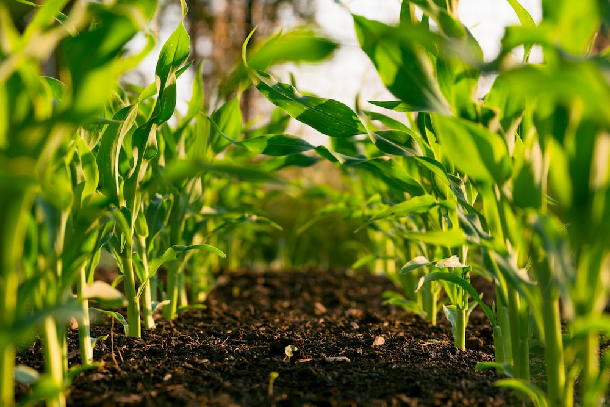

Welcome !
Empowering Farmers Through Digital Innovation
Calling all farmers! Boost your profitability and unlock new opportunities with our groundbreaking platform, Agro Assistance. Experience direct communication and seamless transactions with buyers and suppliers, eliminating intermediaries and maximizing your revenue. Get real-time updates on market demands, connect with potential buyers, and access a wide range of agricultural products and resources to enhance your farming practices. Join our farmer community and revolutionize the way you do business in the agricultural industry!
Read More-

- 
-